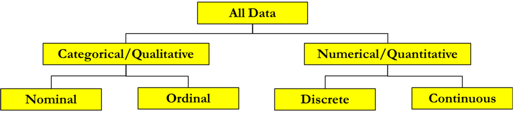
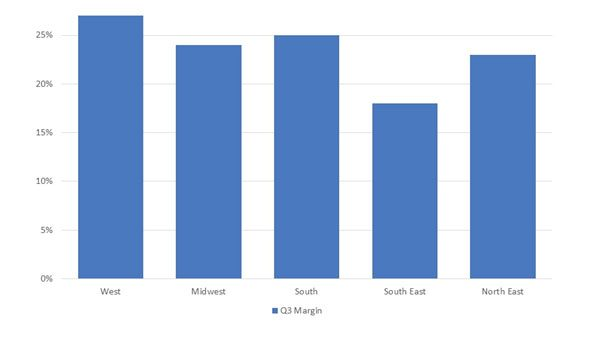
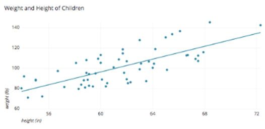

Planning and conducting
The "planning and conducting" stage involves designing a method and choosing equipment that tests the hypothesis without any other factors influencing the results. Safety and ethical issues are considered here and must be carefully planned for.
Variables
- The independent variable (IV) is the factor being investigated: the one you change. We expect that changing the IV will change the results, for a scientific reason. To define the IV, state what will be changed and the specific values used, and explain why these values were chosen.
Pendulum example: changing the length of the pendulum affects the period, so the length is the IV.
- The dependent variable (DV) is what is measured and recorded as results. To define the DV, state what will be directly measured and with what device. If a calculation is needed, describe that too.
Pendulum example: the period changes as a result of changing the length, so the period is the DV.
- The controlled variables (CVs) are all the other factors that could affect the results, so they must be kept the same. Failing to control them can make the conclusion invalid. List each one and describe how it will be controlled.
Pendulum example: mass of the hanging object, release angle, string diameter, string material.
A projectile is an object that flies through the air without propulsion. Using a variety of balls, a ramp, bricks to prop up the ramp, and a measuring tape, come up with three possible experiments to find out what affects the range (distance travelled) of a projectile (the ball). For each, identify the IV, DV and CVs, and write a hypothesis.
The first is: An investigation into the effect of ramp angle on the range of a projectile.
(Wear safety goggles if you test your ideas.)
Experiment 1: ramp angle. IV: angle of the ramp (e.g. 10°, 15°, 20°, 25°, 30°, set with bricks and a protractor). DV: range of the ball (cm), measured with the tape from the end of the ramp to where the ball first lands. CVs: same ball, same release point on the ramp, released from rest, same height of ramp end above the floor. Hypothesis: if the ramp angle increases, the range will increase, because the ball reaches a higher speed at the bottom.
Experiment 2: release height on the ramp. IV: distance up the ramp the ball is released from. DV: range (cm). CVs: same ball, same ramp angle, released from rest, same landing surface. Hypothesis: if the release height increases, the range will increase, because the ball gains more speed.
Experiment 3: mass (or type) of ball. IV: mass of the ball (or type of ball). DV: range (cm). CVs: same ramp angle, same release point, same ramp and floor. Hypothesis: changing the mass of the ball will have little effect on the range, because all objects roll down a ramp at similar speeds when friction is small.
Types of data
When writing a hypothesis and planning a fair experiment, think about what type of data each variable is. This affects how you measure it and how you present it in tables and graphs. The type of data for the IV determines the type of graph.

| Data type | Meaning | Examples | Graph | |
|---|---|---|---|---|
| Categorical | Nominal | Names, types etc. with no fixed order | Pizza toppings, brands, flavours, colours | Column (bar) graph |
| Categorical | Ordinal | Names or sizes with a logical order | S/M/L/XL; first, second, third | Column (bar) graph |
| Numerical | Discrete | Whole numbers | Number of students | Column graph |
| Numerical | Continuous | Decimal values | Height, mass, time (0.12 s), length | Scatter graph (may add a trendline) |


Identify the independent variable, dependent variable and graph type for each experiment.
| Experiment | IV (x-axis) | DV (y-axis) | Graph type |
|---|---|---|---|
| Effect of water on the growth of bean shoot plants | Amount of water (mL per day) | Growth of bean shoots (cm) | Scatter |
| The rebound height of golf balls dropped onto different surfaces | |||
| Comparing the sugar content of different soft drinks | |||
| Comparing the distance of an arrow launched at different angles |
Materials, method and risk assessment
An experiment needs to be repeatable so that others can check your results.
- List your materials and equipment with exact quantities in a clear table. Record the measurement uncertainty for any equipment used to measure something: use the symbol ± and include the units (the same as the measured value).
- Write instructions for a clear, repeatable method.
- The method should effectively control most factors that could influence the results (the controlled variables).
- Make sure your IV values have enough range to give a reasonable trendline.
- Collect enough data: a minimum of 5 IV values with 3 trials each (15 data points minimum).
Method: present a clear method with numbered steps and specific values for all measurements. Write it in the past tense and without personal pronouns (no "I" or "we"). Include directions for repeated trials, and if possible a labelled diagram or photo of the setup.
Risk assessment: include all equipment and materials, plus ethical and environmental issues.
| Chemical / material | Potential hazards and risks | Precautions to minimise risks |
|---|---|---|
| (add rows as required) |
- Environmental issues: describe how waste materials will be safely treated and disposed of.
- Ethical issues: outline any ethical issues. If there are none, state why.
Example: seed germination
| Quantity | Apparatus / material | Uncertainty |
|---|---|---|
| 20 | Barley seeds | |
| 2 | Petri dishes | |
| 2 | Large cotton make-up removal pads | |
| 1 | 30 mL plastic syringe | ± 0.5 mL |
| 1 | Forceps | |
| 1 | Ruler, with millimetre divisions | ± 0.5 mm |
| As required | Deionised water | |
| As required | Masking tape for labelling Petri dishes |
Experimental method:
- Two Petri dishes were labelled with name, date, and either "Light" or "Dark".
- A single large cotton pad was placed in each Petri dish.
- Forceps were used to place 10 seeds in each Petri dish, spread evenly on the cotton pad.
- 30 mL of deionised water was added to each pad with the syringe. Any seeds washed off the pad were repositioned.
- The "Light" dish was placed at the wall side of the bench.
- The "Dark" dish was placed in the cupboard under the bench. (Each dish was watered with 10 mL of water every day.)
- After 4 days, the length of each seedling was measured in mm with a ruler, from the seed to the tip of the shoot (not including the seed or roots), and recorded in the quantitative data table and Excel workbook.
- Observations of the seedlings were recorded in the qualitative data table under "After 4 days".
- 10 mL of deionised water was added to each pad, and both dishes were placed side by side on the bench.
- After 2 more days, observations were recorded under "After 6 days". (Seedling lengths were not re-measured; analysis is based on day 4 data.)
Data processing and analysis:
- The mean length of seedlings in each dish was calculated. (Extension: also calculate the standard deviation.)
- A column graph of mean seedling length for light and dark conditions was created.
| Chemical / material | Potential hazards and risks | Precautions to minimise risks |
|---|---|---|
| Water (deionised) | Spills can create a slip hazard | Wipe up any spilled water immediately |
| Barley seeds | Possible allergen | Do not eat |
Environmental issues: seedlings can be disposed of in regular rubbish bins, as they don't threaten the environment. No toxic chemicals were used, so there is no risk of contamination.
Ethical issues: there are no ethical issues, because seeds were used and no animals or animal materials were involved.
Questions
When conducting an experiment, a fair test is one in which:
Which of the following is the variable that you manipulate when testing a hypothesis?
Which of the following is the variable that you keep constant when testing a hypothesis?
Bob is investigating the effect of the length of a graphite rod on the electrical resistance of the rod. Identify an appropriate IV, DV and two control variables, and state the type of the IV and DV (nominal, ordinal, discrete or continuous).
IV: length of the graphite rod (cm), continuous.
DV: electrical resistance of the rod (ohms, Ω), measured with a multimeter, continuous.
CV1: diameter (thickness) of the rod.
CV2: temperature of the rod (or the same type/brand of graphite, or the same voltage).
What type of graph would be most suitable for presenting Bob's results?
Both the IV (length) and DV (resistance) are continuous, so a scatter graph with a trendline is used.
In a second experiment, a student investigates the effect of different brands of fish food on the mass of a goldfish. Identify an appropriate IV, DV and two control variables, and state the type of the IV and DV.
IV: brand of fish food, nominal (categories with no order).
DV: mass of the goldfish (g), measured with an electronic balance, continuous.
CV1: amount of food given each day.
CV2: water temperature (or size of tank, starting mass/age of fish, length of the experiment).
What type of graph would be most suitable for presenting these results?
The IV (food brand) is categorical, so each brand gets its own column.
Your investigation task
Your major assessment for this unit is to plan an investigation of your choice. Identify an experiment with two continuous variables and write the:
- background theory
- research question
- hypothesis
- variables
- materials
- method
- risk assessment.
These are the red and yellow (questioning and predicting, and planning and conducting) sections of the investigation report. You will write this in a template provided to you. Details of the task, experiment suggestions, rubric and template can be found on DEEDS.